The AI-native Data Engineer
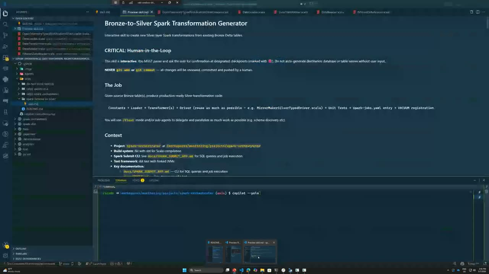
Chapters
Official description
This session explores how AI is transforming data engineering. Discover how agentic Copilot across Fabric Web, VS Code, and CLI removes coding barriers, automates repetitive tasks, and lets engineers focus on optimizing data stacks to unlock faster insights. We’ll also cover the latest Fabric releases and how they accelerate the path from idea to production.
Summary
Overview
The session reframes data engineering as an "AI-native" discipline in which engineers retain ownership of architecture and quality while delegating implementation to agentic Copilot across Fabric Web, VS Code, and the CLI. Through two demos, it shows how grounding AI in well-structured code, skills, and deterministic tooling lets a single engineer parallelize medallion-architecture pipeline work on Microsoft Fabric.
Key announcements
- Enhanced Copilot Chat in Fabric notebooks (00:05:02
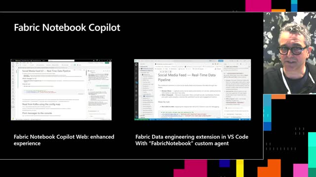
m05s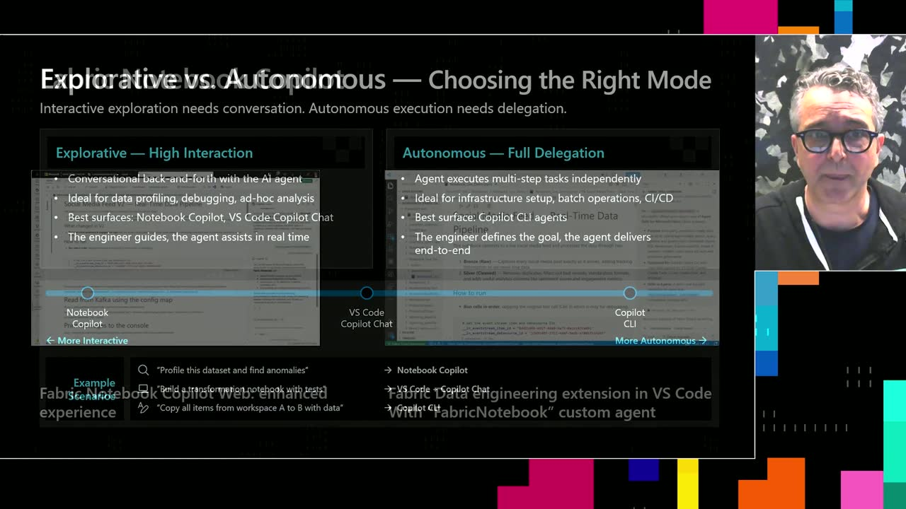
m10sp05s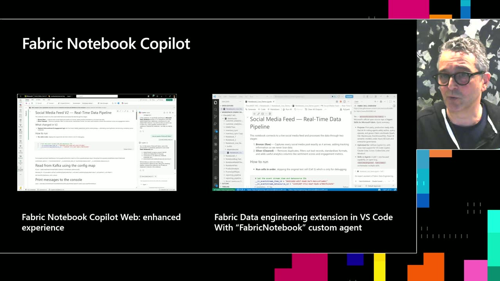
p10s) — An upgraded conversational experience that helps users work directly in the Fabric portal. - Fabric Data Engineering extension for VS Code with MCP support (00:05:06m05s
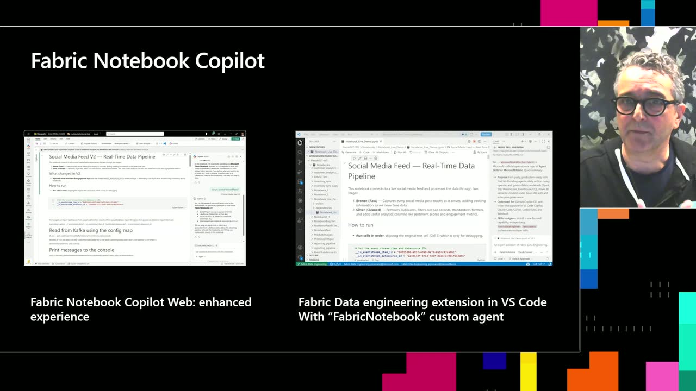
m10s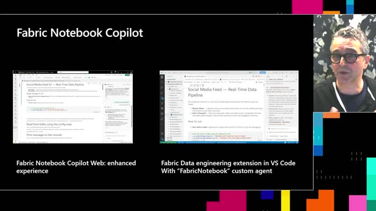
p05s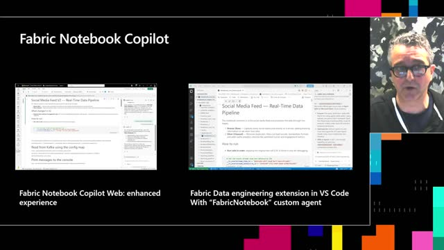
p10s) — Now enhanced with the Fabric notebook MCP server and tools that make the GitHub Copilot agent aware of Fabric context, including lakehouse targets. - Fabric-aware notebook agent mode (00:05:50
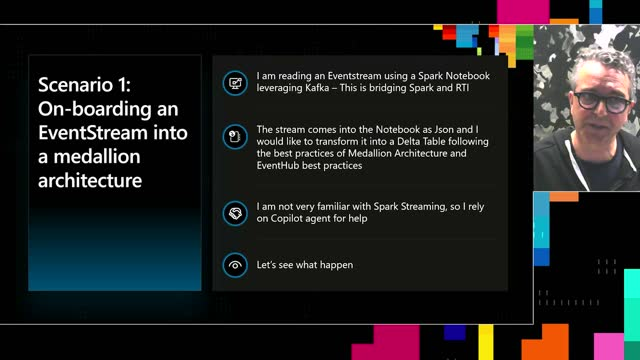
m05s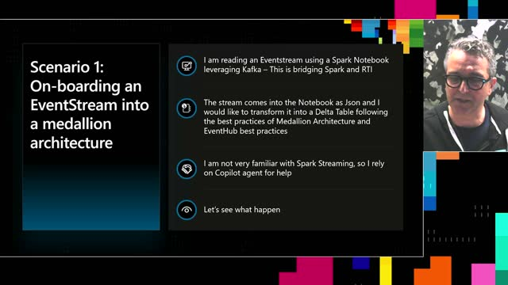
m10sp05s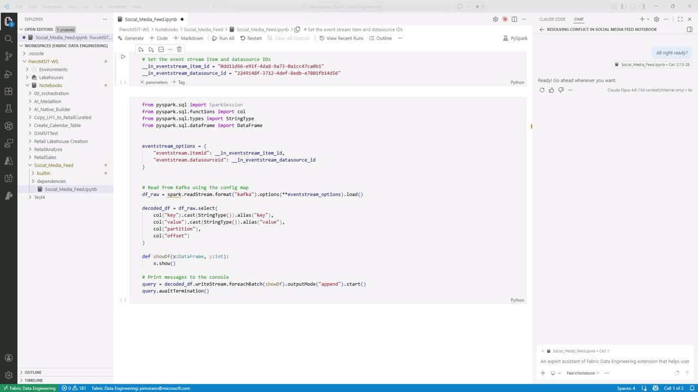
p10s) — Lets Copilot read a Spark notebook, discover skills in built-in folders (E2E medallion architecture, eventhouse authoring), propose a phased plan, and execute selected cells.
{kind=link}
{kind=link}
{kind=link}
{kind=link}
{kind=link}
{kind=link}
{kind=link}
{kind=link}
{kind=link}
{kind=link}
{kind=link}
{kind=link}
Topics covered
- Evolution of the data engineer role from manual ETL toward AI-accelerated implementation while retaining architectural control.
- Matching the AI interaction model (conversational vs. delegated execution) to the task and surface (Fabric web portal, VS Code IDE, CLI/terminal).
- Microsoft Fabric as a unified platform with OneLake as the common data foundation for governance and security.
- Medallion architecture (bronze/silver/gold), schema-on-read, Delta Lake, checkpointing, and eventhouse optimization.
- Streaming ingestion from a Fabric event stream as a Kafka source into Delta tables via a Spark notebook.
- The "Ralph loop" concept: placing AI in a context-bounded box with a well-defined task and visual stop cues.
- Mounting OneLake locally via the BlobFuse driver in a Linux VS Code dev container to run local Fabric Spark against production data.
- Authoring Copilot skills (YAML front matter plus markdown) and deterministic CLI tools for repeatable AI behavior.
- Writing AI-friendly code: shared interfaces/traits (a
DataTransformertrait taking a DataFrame and returning a DataFrame), reusing loader/transformer/driver classes, and gold-standard unit tests. - Scaling out: parallelizing Copilot CLI across multiple GitHub Actions machines or dev boxes, testing on production data before merging, then running the same Spark code at scale in Fabric.
Notable quotes
"This is not a different person. It is evolution of the same job. The engineer still owns the architecture, the quality, and the end results but uses AI to accelerate the implementation." — Piero Morano
"All you need to do with AI is basically go ahead and ground it in context, put it inside of a box, and let Ralph Wiggum do what he does best, which is essentially just keep trying until what you ask for succeeds." — Raki Rahman
"The quality of the code would be as good. Honestly, it is as good as if I sat here and wrote it myself." — Raki Rahman
Products and tools mentioned
- Microsoft Fabric
- OneLake
- Power BI
- Fabric Real-Time Intelligence
- Fabric Data Engineering extension for VS Code
- Visual Studio Code (dev containers)
- GitHub Copilot / Copilot CLI
- Claude Opus [inferred]
- Apache Spark / Fabric Spark (PySpark, Scala)
- Apache Livy
- Delta Lake
- Apache Kafka
- Fabric Eventstream / Eventhouse
- Model Context Protocol (MCP)
- BlobFuse (ADLS driver)
- dbt (Data Build Tool)
- Hive API
- GitHub Actions
- Azure DevOps
Speakers featured
- Piero Morano — Product Management lead for the Developer Experience for Data Engineering and Data Science, Microsoft Fabric.
- Raki Rahman — Principal Software Engineer, SQL Server Telemetry and Intelligence team.
Follow-up resources
- Two GitHub repositories shared on screen (a reproducible VS Code dev container and sample code demonstrating Copilot skills and patterns) under the presenter's GitHub handle.
- Microsoft Fabric documentation, tutorials, and YouTube channel referenced in the closing remarks.
Frames
{kind=link}
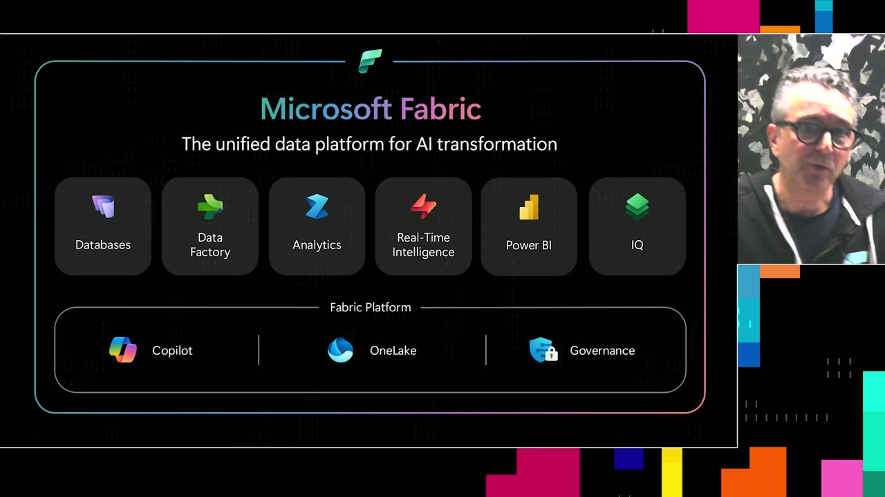
{kind=link}
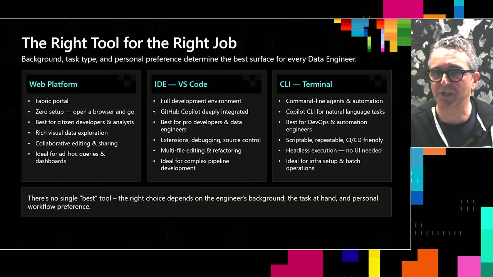
{kind=link}
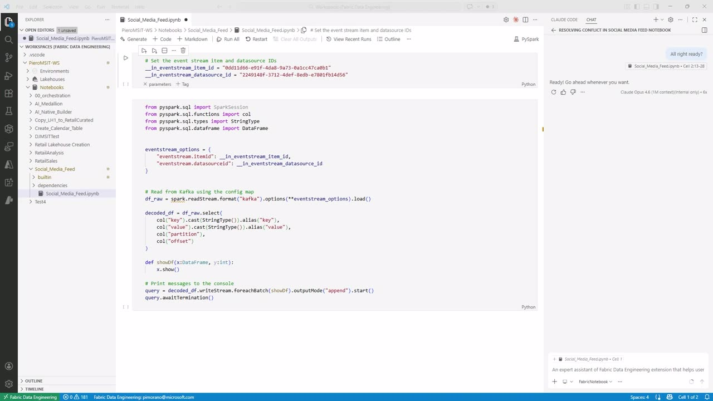
{kind=link}
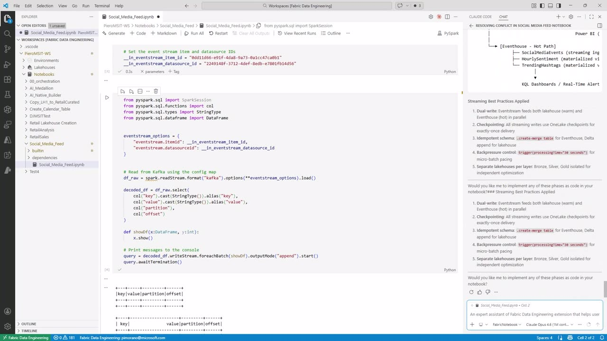
{kind=link}
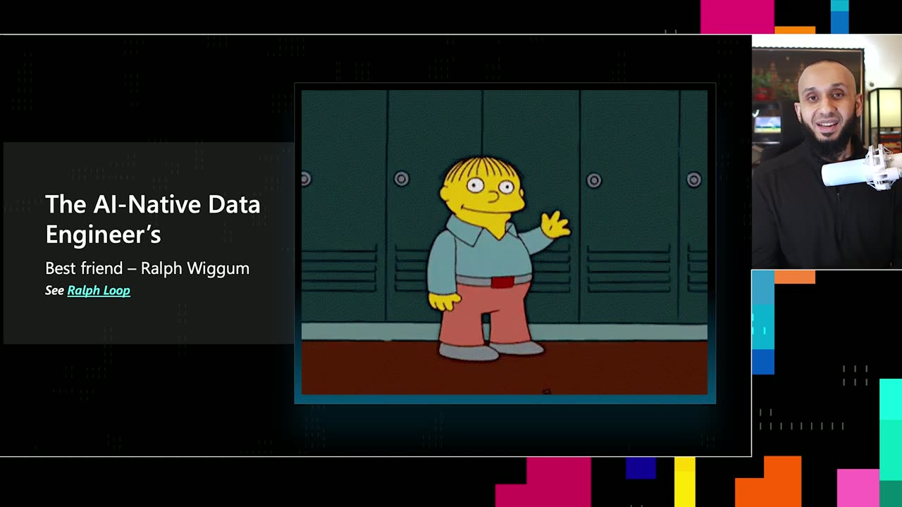
{kind=link}
{kind=link}
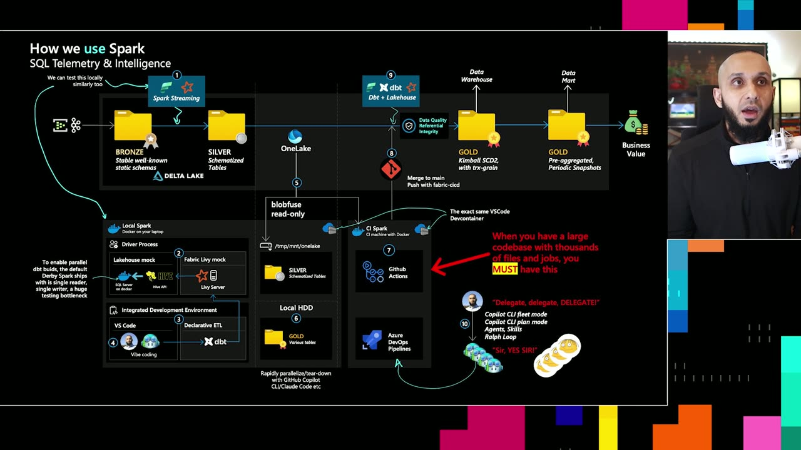
{kind=link}
{kind=link}
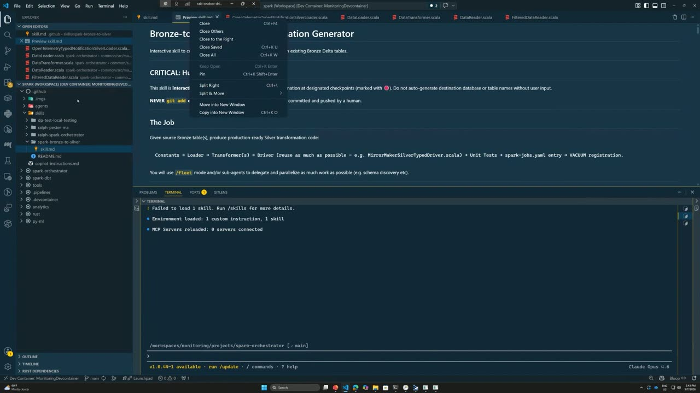
{kind=link}
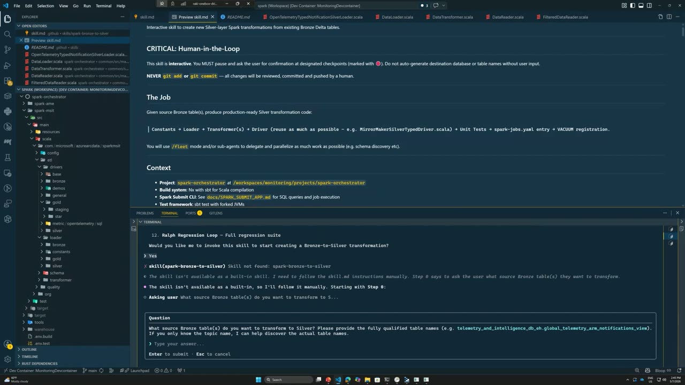
{kind=link}
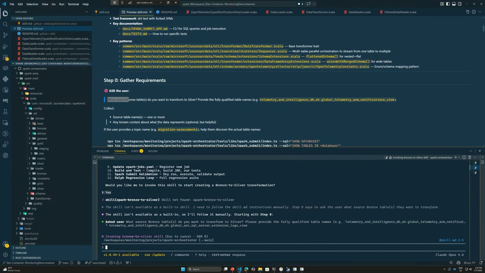
{kind=link}
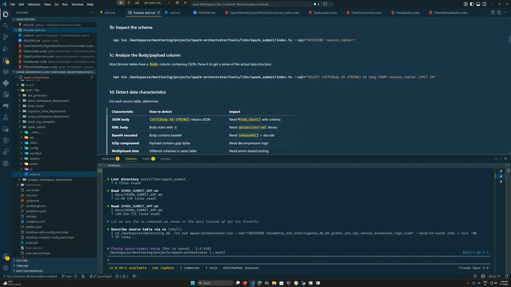
{kind=link}
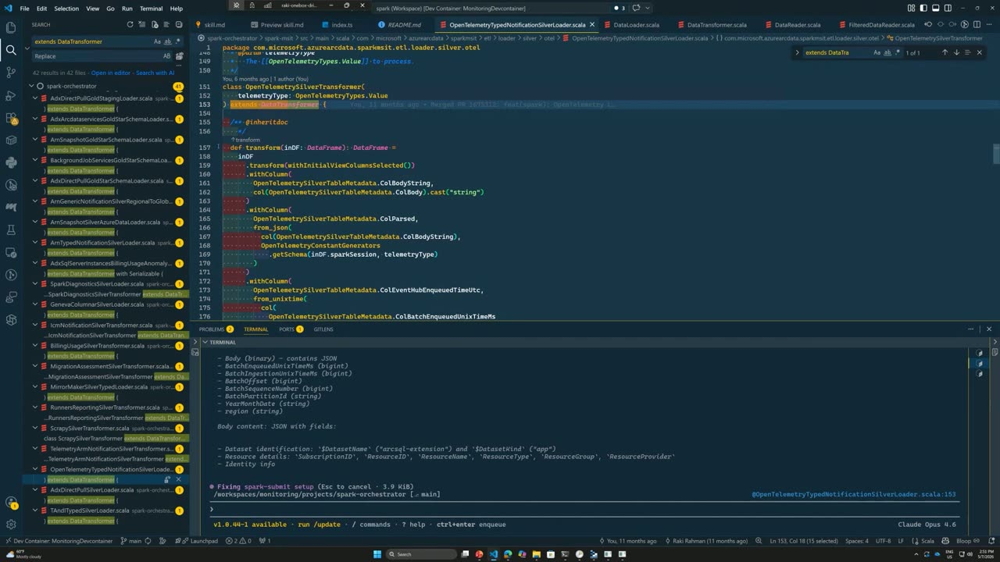
{kind=link}
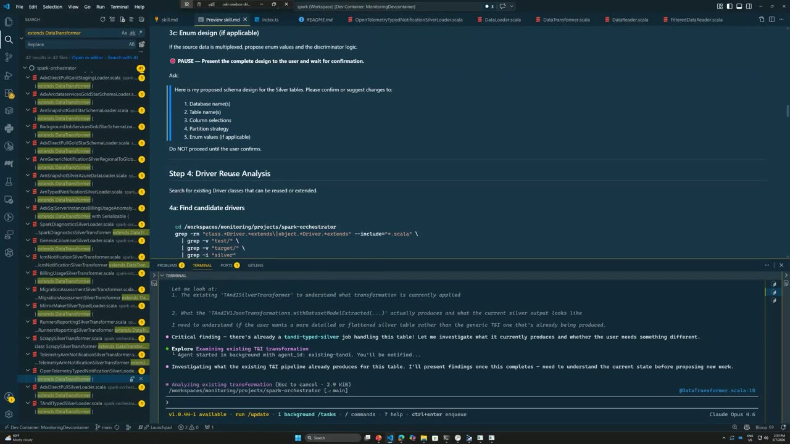
{kind=link}
Transcript
Show / hide transcript (43,399 chars)
[00:00:03] PIERO MORANO: Hello, everyone, [00:00:04] and welcome to our Microsoft Build session [00:00:06] on the AI-Native Data Engineer. [00:00:09] This is obviously a very hot topic right now, [00:00:11] and I'm really excited to spend this session exploring how AI is [00:00:14] changing the way that engineers work, [00:00:16] not just by generating code [00:00:18] but by helping us rethink the full data developer workflow [00:00:22] across Fabric, VS Code, and CLI. [00:00:25] My name is Piero Morano, and I lead product management [00:00:28] for the Developer Experience for Data Engineering [00:00:30] and Data Science in Microsoft Fabric. [00:00:32] In this session, we'll look [00:00:33] at how the data engineering role is evolving, [00:00:36] how to choose the right power tool for the right job, [00:00:40] and how Fabric can help data engineers move faster while [00:00:44] staying in control [00:00:45] of architecture quality and outcomes. [00:00:47] I'm really excited to be joined by Rocky Rackman, [00:00:49] who will bring a practical data engineering perspective [00:00:52] and show how these ideas apply in real Fabric scenarios. [00:00:56] Raki, over to you for a quick intro. [00:00:58] RAKI RAHMAN: Hey. [00:00:58] Thanks, Piero. [00:00:59] Hi, everybody. [00:01:00] My name is Raki Rahman. [00:01:01] I'm a principal software engineer [00:01:02] on the SQL Server Telemetry and Intelligence team. [00:01:05] We've been a Fabric customer for about three or four years now. [00:01:08] And I aspire to be an AI-native data engineer, and I would love [00:01:12] to show some of the tips [00:01:14] and tricks we've picked up along the way. [00:01:16] Thank you, Piero. [00:01:16] PIERO MORANO: Awesome. [00:01:17] Thank you so much, Raki. [00:01:18] Let me quickly walk through the agenda today. [00:01:21] So we'll start by framing how the role [00:01:23] of the data engineer is evolving in the age of AI. [00:01:26] Then we'll look at two important working styles, [00:01:30] the native IDE data engineer who prefers VS Code, [00:01:33] a more developer-centric workflow; [00:01:35] and briefly touch upon the web-first data engineer [00:01:38] or analyst who works directly in Fabric portal. [00:01:41] From there, Raki will take us into a practical Fabric scenario [00:01:44] and show how he builds a pipeline in his work [00:01:48] of everyday work in his team across using, [00:01:52] leveraging AI across the process. [00:01:56] For those of you new to Microsoft Fabric, [00:01:59] here's a quick foundation before we dive deep [00:02:01] into the main topic. [00:02:02] Microsoft Fabric brings together the core experiences data teams [00:02:07] need in one unified platform. [00:02:08] So, from databases to data orchestration and analytics, [00:02:12] real-time intelligence, Power BI, [00:02:15] what makes it especially important in the age of AI is [00:02:18] that these experiences are not isolated. [00:02:21] They are connected through the Fabric platform with OneLake [00:02:24] as the common data foundation, governance, and security. [00:02:28] With that foundation in mind, let's dive deeper [00:02:31] into how the role of data engineer is evolving. [00:02:34] Many of you are probably already in the middle [00:02:36] of this transition or revolution. [00:02:38] You are experimenting with AI tools in the browser, [00:02:41] VS Code perhaps on the terminal, [00:02:43] and trying to understand what this means [00:02:45] for your day-by-day work. [00:02:47] On the left side of these slides, [00:02:49] we see the traditional work of the data engineer: [00:02:52] building Pipelines, writing ETL logic, debugging issues, [00:02:55] managing dependencies, [00:02:56] making sure that the old data flow works reliably. [00:03:00] That work is still critical, but the way we do it is changing. [00:03:05] On the right-hand side, we have the emerging AI-native [00:03:08] data engineer. [00:03:09] This is not a different person. [00:03:11] It is evolution of the same job. [00:03:13] The engineer still owns the architecture, the quality, [00:03:15] and the end results but uses AI [00:03:18] to accelerate the implementation. [00:03:21] From a product standpoint, [00:03:22] this means investing not only on-code generation but also [00:03:26] in the foundations that make AI useful for real engineers. [00:03:30] So more work on API tools, skills, [00:03:33] and better context and experience. [00:03:36] As you watch this session, I encourage you to think [00:03:39] about which one of these tools can help you be more productive [00:03:43] using AI. [00:03:45] So, if the role of the data engineer is changing, [00:03:47] the tools need to evolve as well. [00:03:50] The key point is that there is no single best surface [00:03:53] for every data engineer or every task. [00:03:55] First, the Fabric web portal, This is great for zero setup, [00:04:00] visual exploration collaboration, [00:04:02] and quick access to data. [00:04:04] Second, IDE in VS Code. [00:04:07] This is where many professional developers [00:04:10] and data engineers are most productive with GitHub Copilot, [00:04:13] source control, and more. [00:04:15] Third, the CLI and terminal experience. [00:04:17] This is useful when the task is more scriptable, repeatable, [00:04:20] and automation-focused. [00:04:23] Not every task needs the same AI experience. [00:04:26] For exploration, debugging, and ad hoc analysis, [00:04:29] you usually want a conversational flow [00:04:32] where you stay close to the data and guide the AI step by step. [00:04:36] For more repeatable or operational work, you may want [00:04:38] to delegate more [00:04:40] of the execution while reviewing the plan and results. [00:04:44] The key point is simple: Match the AI interaction model [00:04:48] to the task, and keep the engineer in control [00:04:50] of the important decision. [00:04:52] So, before we jump into the demo, [00:04:54] let me quickly clarify the experiences I am referring to. [00:04:59] First, we have the newly enhanced Copilot Chat [00:05:02] in Fabric notebooks, which helps user work directly [00:05:05] in the Fabric portal. [00:05:06] Second, we have the Fabric data engineering extension [00:05:09] in VS Code, now enhanced with MCP and tools [00:05:12] that make the custom GitHub Copilot agent aware [00:05:15] of Fabric context. [00:05:18] Let me jump into the first demo [00:05:21] where I am reading an event stream using a Spark notebook, [00:05:27] leveraging Kafka. [00:05:28] And this is bridging the Spark and the RTI, [00:05:31] the real-time intelligence in Fabric. [00:05:33] The stream comes into the notebook as a JSON, [00:05:36] and I would like to transform it [00:05:37] into a Delta table following the best practices [00:05:40] of medallion architecture and EventHub best practices. [00:05:43] I'm not very familiar with streaming, [00:05:45] so I decide to use Copilot and see how it can help. [00:05:49] Let's see what happened. [00:05:50] UNIDENTIFIED PERSON 1: I am using now Fabric Data Engineering new [00:05:52] VS Code extension, and I will leverage the new Fabric-aware [00:05:56] notebook agent mode to integrate a new social media feed [00:05:59] from event stream. [00:06:00] I am reading the event stream in my Spark notebook. [00:06:02] The first cell is a parameter cell, [00:06:04] and the second one connects to the Fabric event stream [00:06:07] as a Kafka source, decoding the binary key value columns [00:06:10] to strings. [00:06:11] As I run the notebook cells and events start arriving, [00:06:14] each record contains a JSON payload [00:06:16] with customer feedback details. [00:06:18] My goal is to ingest this streaming [00:06:20] into our medallion architecture, [00:06:21] applying streaming best practices. [00:06:23] So, instead of manually designing the ingestion pattern, [00:06:26] I ask Copilot, can you check this notebook that read [00:06:29] from event streaming social media feeds and suggest a plan [00:06:32] to incorporate it into our medallion architecture [00:06:35] and eventhouse authoring best practices [00:06:37] in my built-in folders? [00:06:39] Copilot interprets the notebook and, after checking the skills, [00:06:42] suggests a plan that starts with Phase 1 Bronze Layer: One, [00:06:45] parse the value column, which right now is just a big string [00:06:48] of JSON text; two, add tracking columns, [00:06:51] suggesting to break it apart into individual columns [00:06:53] as add metadata columns, including ingestion timestamp [00:06:56] and batch ID so we can trace every record back to its source; [00:07:00] three, write to a Delta bronze table using append-only mode, [00:07:04] adding also a checkpoint so, if the notebook crashes [00:07:06] and restarts, it picks up exactly where it left off [00:07:08] to avoid duplicates or data loss; four, validate; finally, [00:07:12] check row counts to make sure data is flowing. [00:07:15] But how did Copilot figure all of this out? [00:07:17] It scanned the built-in folder [00:07:18] and discovered two available skills: [00:07:21] E2E medallion architecture and eventhouse authoring. [00:07:24] By reading the medallion architecture skill, [00:07:26] Copilot was able to generate a solid implementation plan. [00:07:30] Continuing with the silver layer, the plan suggests reading [00:07:32] from the bronze Delta table that we just created. [00:07:34] From there, we apply a few quality rules [00:07:36] like removing duplicates; then do some schema conformance; and, [00:07:39] finally, curate data to a silver table. [00:07:42] The plan also suggests additional steps, [00:07:44] including a gold layer, eventhouse optimizations, [00:07:47] and even a graphical view of the proposed architecture. [00:07:50] But I want to move in a more controlled way, so I ask Copilot [00:07:53] to continue only with Phase 1 and Phase 2 for now, [00:07:56] meaning bronze and silver only. [00:08:00] I also make the lakehouse targets explicit: Retail raw LH [00:08:03] for bronze, retail curated LH for silver. [00:08:06] And I want to preserve the setup I already have, [00:08:08] so I ask Copilot not to modify the first two cells [00:08:11] in my notebook and, instead, implement everything starting [00:08:14] from cell 3, keeping all the new steps in the same notebook. [00:08:18] Copilot identifies the two lakehouses for bronze [00:08:20] and silver using Fabric notebook MCP server and proceeds [00:08:25] with a plan maintaining the first two cells untouched. [00:08:28] It also updates the notebook with clear markdown cells, [00:08:31] very convenient when collaborating [00:08:32] with other team members. [00:08:34] After a few iterations with Copilot, [00:08:35] I now have the final version of the notebook. [00:08:38] It includes clear markdown cells so the pipeline is easy [00:08:40] to understand and collaborate on, and it also has a cell [00:08:43] to control the incoming streaming data. [00:08:45] At this point, I ask Copilot to execute the notebook. [00:08:49] I also ask it to skip one debugging cell. [00:08:51] Copilot understands the current cell organization [00:08:53] and runs the notebook. [00:08:55] During execution, it confirms the number [00:08:57] of incoming streaming records being written [00:08:58] into the bronze and silver tables. [00:09:00] Once the run completes, I can see the data flowing [00:09:03] through the pipeline, [00:09:04] transformed from the original JSON events into Delta tables [00:09:07] in the bronze and silver lakehouses. [00:09:09] This saved me a significant amount of time. [00:09:12] Before moving forward, I'll ask another team member to review [00:09:14] and validate the notebook. [00:09:16] PIERO MORANO: Okay. [00:09:16] Great. So now that we have seen, we have a better idea [00:09:20] of what does it mean to build a data pipeline using GitHub [00:09:25] Copilot on VS Code and the VS Code extension, [00:09:28] the engineering extension. [00:09:29] I will hand it over to Raki to have a better understanding [00:09:34] of how this can work in real-life experience. [00:09:37] Raki, over to you. [00:09:38] RAKI RAHMAN: Thank you, Piero. [00:09:39] So we're going to have some fun now. [00:09:43] The way I want to approach AI is this is a TV show character. [00:09:49] It's from The Simpsons. [00:09:50] His name is Ralph Wiggum. [00:09:52] So the way you can think about AI, [00:09:54] or at least this is my mindset of thinking about AI, [00:09:56] is Ralph Wiggum in The Simpsons character, [00:09:59] he's a very charming, very simple kid. [00:10:03] He's not too bright, but he's very hardworking. [00:10:06] And the idea is that, when you can give Ralph a task [00:10:11] and you can give him the hints in order to go ahead and achieve [00:10:14] that task, he is the hardest worker in the room in order [00:10:18] to achieve whatever you've asked him to. [00:10:20] And this concept in AI is actually called a Ralph loop, [00:10:23] which you can take a look in your favorite search engine. [00:10:27] Go ahead and search up the Ralph loop, and you'll notice [00:10:29] that this is picking up a lot of momentum in the industry. [00:10:33] And the idea is that you want to basically go ahead and place AI [00:10:39] into a context-bounded box and give it a well-defined task. [00:10:44] And, similar to Ralph, when you give him a task, [00:10:46] he's going to try his hardest in order [00:10:48] to achieve what you've asked him to. [00:10:50] AI is also going to be able to do that, but it is up to you [00:10:53] to basically go ahead and place AI inside the right context. [00:10:56] This is called a Ralph loop. [00:10:58] So the way my team, we use Fabric is -- [00:11:03] let me go ahead and just show the architecture -- [00:11:06] is we have data that is coming in, you know. [00:11:09] So, similar to other enterprises, [00:11:12] we employ the Medallion Architecture. [00:11:14] So, on the top left of my screen, [00:11:16] you can see we have data coming in at very high velocity [00:11:19] from all sorts of data sources, like, for example, [00:11:21] Piero was showing Kafka. [00:11:24] A lot of data coming in, being landed into Delta Lake. [00:11:27] And then the idea is the data that is inside of Delta Lake, [00:11:30] inside of a bronze format, there's no schema. [00:11:34] There is no structure to the data. [00:11:36] There's no columnar compression. [00:11:37] And the first thing that we have to do [00:11:39] as a data engineer is essentially apply schema [00:11:42] to the data. [00:11:42] This is called schema on read. [00:11:44] And the schema might be very complex. [00:11:46] It might be XML. [00:11:47] There might be nested JSON. [00:11:48] There could be all sorts of different things that we have [00:11:52] to do in order to apply a robust schema to the data, [00:11:56] get it into columnar format, and store it inside of Delta Lake [00:11:59] in a well-compressed structure so that, when you run queries [00:12:03] on the data, your queries are effectively fast. [00:12:05] So we're going to look at a demonstration of this workflow [00:12:10] that I just mentioned. [00:12:11] But the idea is, now that the data has landed in OneLake, [00:12:15] what I want to do, actually, is, because I'm working in VS Code, [00:12:18] I want to use the compute power of my local machine in order [00:12:24] to work with data that is production data in OneLake. [00:12:27] And so one of the tricks that I've picked [00:12:29] up over the last three years in using OneLake is the fact [00:12:32] that you can basically go ahead and mount OneLake [00:12:35] into your personal computer. [00:12:37] So, if you're a Windows user, you are probably familiar [00:12:40] with the OneLake Explorer. [00:12:41] In this case, we're going to be using a Linux [00:12:44] VS Code dev container where we're going [00:12:47] to be using a mount called BlobFuse. [00:12:49] This is basically a standard Linux driver. [00:12:50] You can, again, go to your favorite web search and search [00:12:54] for BlobFuse driver for ADLS; and you will find [00:12:57] that you can use BlobFuse in order to go ahead [00:12:59] and mount OneLake as a read-only mount [00:13:02] into your local file system. [00:13:03] So, in the bottom of my screen, [00:13:05] you can see I'm showing tmp mount OneLake. [00:13:07] This is basically going to be a local drive where I'm going [00:13:10] to have OneLake Delta Lake tables available locally. [00:13:14] I'm going to show you that in a second. [00:13:15] So then what my team does is basically we try [00:13:18] to simulate Fabric Spark running on our computer. [00:13:21] So we're basically able to go ahead and use the power [00:13:23] of our local compute on data [00:13:24] that is running inside of OneLake. [00:13:27] So, for example, we're going to have Spark running locally. [00:13:30] I have a Livy server. [00:13:31] And, by the way, all of this is open source. [00:13:34] So, in an upcoming slide, I'll be giving you some GitHub links [00:13:38] where you can go ahead [00:13:38] and reproduce this demonstration locally. [00:13:40] So, essentially, the idea is I've got a Livy server. [00:13:43] I've got Fabric Spark. [00:13:45] I've got the Hive API. [00:13:46] I have my Copilot CLI. [00:13:48] And I can use either regular Spark code, [00:13:50] so either it's PySpark or Scala; or I can use a tool like DBT, [00:13:55] Data Build Tool, which is gaining a lot of traction [00:13:57] in the industry, in order to go ahead [00:13:59] and do my data transformations. [00:14:02] The idea from that point is any code [00:14:05] that I write locally we're going to be running full unit tests, [00:14:09] full integration tests on this data, on production data [00:14:12] on our local computer. [00:14:15] And the idea is that I can go ahead [00:14:18] and essentially take what I'm about to show you and, [00:14:21] if I have, for example, GitHub Action CI machines, [00:14:24] or I have multiple dev boxes, I can effectively go ahead [00:14:27] and parallelize what we're going to look at today [00:14:29] with the Ralph loop across 10 different machines, [00:14:33] which allows me to basically work with 10 different users. [00:14:36] So, previously, when I would personally be serializing these [00:14:39] tasks, you know, I might not be getting done as much work [00:14:42] as my business needs, whereas now with AI, [00:14:45] even as a single person, [00:14:46] I'm able to essentially parallelize and, you know, [00:14:48] throw AI at the data engineering problem, and, at the same time, [00:14:53] I'm fully in control, as you'll see, because I have [00:14:55] to give a lot of input to the AI. [00:14:57] And, again, we're just basically putting Ralph Wiggum [00:14:59] into that bounded box. [00:15:01] And then, after that, you know, in order to build confidence, [00:15:04] I can go ahead and take the code that is generated. [00:15:06] I can use Azure DevOps or GitHub Actions to test that same code [00:15:10] on OneLake's production data before I merge my PR into main. [00:15:15] And then, when I merge my PR into main, [00:15:18] we're going to go ahead and take it all back to Fabric again. [00:15:20] It's the same Spark code. [00:15:22] And we're going to use the power of Fabric Spark; or you can, [00:15:25] you know, scale out to 200 nodes with 64 cores and so on, [00:15:29] which I wouldn't be able to do locally, right? [00:15:31] So we basically get the best of both worlds, [00:15:32] and the pipeline is running confidently in production. [00:15:35] So I'm going to show you a demonstration [00:15:37] of exactly what I mean by that. [00:15:38] So, first of all, I'm inside of my Visual Studio Code. [00:15:43] You can see I am running inside of the dev container. [00:15:46] I also have my Fabric data engineering extension, [00:15:49] so I can interact with Fabric. [00:15:51] And so, just to orient you with regards to what's [00:15:54] on my screen right now, I have a Copilot skill, [00:15:58] which is what you're seeing over here. [00:16:00] So the way you author a skill is you basically need [00:16:02] to have a YAML front matter that allows the Copilot CLI [00:16:06] to go ahead and discover what this skill does; [00:16:10] and then I'm just showing you the markdown format. [00:16:12] So the first thing I'm going to do is I'm going to go ahead [00:16:14] and turn on the Copilot CLI, which is running locally. [00:16:19] And let me just go ahead and expand my screen a little bit. [00:16:23] So this is joining. [00:16:24] I'm going to go ahead and just clear my screen. [00:16:26] Perfect. So now you'll notice that, if I go to -- [00:16:31] let me just go ahead and show you that OneLake is mounted [00:16:33] on my local file system. [00:16:34] So, if I go to tree, this is just [00:16:36] to show you what the data contains, tmp dot m the mount. [00:16:47] Okay. So you can see I have three different lakehouses [00:16:51] from my Fabric production workspace mounted [00:16:54] into my file system. [00:16:54] And so, if I, say, go ahead and do tree 4, you'll be able [00:16:58] to see all of the different, you know, Deltas. [00:17:01] We have hundreds of Delta tables [00:17:02] that are basically going to be mounted. [00:17:03] So this is taking a little bit of time, [00:17:05] but you can see these are all of our hive partitions [00:17:08] and so on and so forth. [00:17:09] So, essentially, this is our production OneLake [00:17:11] that I've just, like, mounted locally. [00:17:13] Cool. So let's go back to our scenario. [00:17:16] What I want to do is I want to go ahead and use Copilot [00:17:20] and Ralph in order to ingest a brand-new data source [00:17:24] that has been asked for me from bronze and to get it into, [00:17:27] let's say, gold or silver or whatnot. [00:17:29] So let's go ahead and simulate what I would do. [00:17:32] So the first thing is I go ahead and just fire this skill. [00:17:34] So I'm just going to take the name of the skill, [00:17:36] and all you need to do [00:17:38] in Copilot is you basically just need to fire it into the task. [00:17:45] So let me go ahead. [00:17:51] Copy path. [00:17:53] And then you just pop that in. [00:17:55] And we have the Spark Bronze to Silver skill, and you fire that. [00:17:59] Now, what is the most important thing here that I want [00:18:02] to highlight is the authoring of the skill. [00:18:05] So, for example, you can see we are immediately placing Copilot [00:18:09] -- in this case, I'm using Claude Opus. [00:18:13] I'm placing it into a bounded box, right? [00:18:15] So I'm placing Ralph into a bounded box. [00:18:18] So, essentially, you can see that it's saying, okay. [00:18:22] Do you want to go ahead [00:18:22] and start creating a bronze to silver? [00:18:25] I say yes. [00:18:26] Okay. And, essentially, let's go ahead [00:18:29] and let Copilot do what it's doing. [00:18:32] And we're telling it, okay. [00:18:36] You're not allowed to commit the code. [00:18:37] You're not allowed to add the code. [00:18:39] I'm going to review everything that you produce. [00:18:42] And I am also giving it hints [00:18:44] about what is the structure of my code base. [00:18:46] So you're going to see that one [00:18:48] of the most important things you can do as a data engineer, [00:18:50] especially when you have a very complex code base -- [00:18:52] so, for example, here you can see we have a Scala-based code [00:18:56] base; and the code base is quite complex. [00:18:58] There's at least a few hundred thousand lines [00:19:01] of code, if not more. [00:19:03] So, basically, we have hundreds and hundreds of lines of code [00:19:06] that are used in order to serve [00:19:08] up the SQL Server OneLake data lake, right? [00:19:12] So this just keeps on going. [00:19:13] So what you don't want to do is you don't want Copilot [00:19:15] to just go ahead and discover all of this code every time [00:19:19] because you're going to run out of the context window. [00:19:21] And so, essentially, what I'm telling Copilot is, look. [00:19:23] You don't need to read the whole code base. [00:19:25] The way we write our code is we use these loader classes, [00:19:27] transformer classes, and driver classes. [00:19:29] And you want to go ahead, Copilot, and reuse as much code [00:19:34] as possible; run unit tests; run the Spark jobs; [00:19:37] and then basically vacuum the table so that, in production, [00:19:41] we have the table in a good format. [00:19:43] So we give some context. [00:19:45] You go ahead and tell Copilot exactly what your coding pattern [00:19:48] is in your particular repo. [00:19:50] And, while it's reading the skill, you can basically see [00:19:53] that it picks up exactly what the context is. [00:19:56] At this point, you just have to basically go ahead [00:19:59] and tell AI some sort of visual cue where it knows to stop. [00:20:04] And you can see it's going ahead and telling me, okay. [00:20:07] What bronze tables do you want to transform to silver, right? [00:20:09] Go ahead and provide the full database and table name. [00:20:12] So, in this case, as I mentioned, [00:20:15] we have Spark running locally. [00:20:16] So you can see I've got Apache Spark is running [00:20:19] on my local file system. [00:20:21] And I just vibe-coded a little UI just for my team [00:20:25] where we're using Livy as an API in order to query my local Spark [00:20:30] and using local Spark to query OneLake. [00:20:32] These are the tables that we have in OneLake. [00:20:34] So just as an example, you know, let's say I want to go ahead [00:20:36] and do a bronze transformation on this particular table, [00:20:40] on this Arc SQL Server extension log. [00:20:42] So all I have to do is go ahead and just place it. [00:20:48] So I have this query. [00:20:48] Let me just go ahead and copy it and paste it here, [00:20:51] and then I click on run. [00:20:53] And what this is doing is this is using Livy [00:20:55] on my local dev container with my local Spark to query OneLake, [00:21:00] which is, you know, potentially on the other side of the world; [00:21:03] and I'm able to see this data. [00:21:05] So right off the bat you can see that our bronze data, it looks, [00:21:08] as you can see, there's no schema. [00:21:10] The body itself is completely, you know, [00:21:13] unreadable by a human being. [00:21:14] And this is essentially a binary encoded payload. [00:21:18] This is what we would call bronze. [00:21:20] So what I need to do is I just take this table and I just need [00:21:23] to go ahead and provide it back to our trusty friend Copilot. [00:21:27] So I just go ahead and pop it in. [00:21:29] And what you're going to notice is that one [00:21:32] of the things you want to do [00:21:33] with Copilot is you have these skills. [00:21:36] The skills are great. [00:21:37] But you also want to have deterministic code [00:21:41] that the AI can invoke so, every time you're trying [00:21:45] to have it do something, you can have repeatable behavior. [00:21:48] So one of the things that my team has done is, you know, [00:21:50] I have built up -- as I mentioned, I have the UI, [00:21:53] which I've vibe-coded; [00:21:54] and I also built deterministic CLI tools [00:21:58] that allow the Copilot, like in this case, [00:22:01] you can run SQL query. [00:22:02] So, for example, you can see again I used another Copilot [00:22:05] to code this. [00:22:06] But I just have the ability for Copilot to go ahead [00:22:09] and run a SQL statement and then get the results back inside [00:22:13] of markdown, right? [00:22:14] So, basically, this index.ts file that you're seeing, [00:22:16] it is a skill that allows me to basically go ahead [00:22:19] and allow a human or a Copilot [00:22:22] to just run regular Spark SQL statements [00:22:24] and get the results back. [00:22:26] So that's what Copilot is doing right now. [00:22:28] You can see it is basically going ahead [00:22:30] and doing a describe statement on that table in order [00:22:33] to see what the schemas are. [00:22:34] It is doing a sampling of the raw data, so Copilot is able [00:22:38] to basically go ahead and see what the shape of my data is. [00:22:41] And then, finally, we're going to -- [00:22:43] you need to basically give it hints [00:22:45] to say what the encoding of the data is. [00:22:47] So, for example, what I was showing you earlier is, [00:22:50] in case of my team, it's a JSON body that is base64 encoded. [00:22:54] And so what you're going to find is Copilot is basically going [00:22:57] to be able to use these tips to figure [00:22:59] out exactly what the shape of my data is, right? [00:23:02] So the idea that I'm trying to convey is that, [00:23:04] when you're a human being and you have a bronze dataset [00:23:08] and you take a look at your data, the same kind [00:23:10] of cognitive analysis that we do by using our eyes in this tool, [00:23:15] you basically just need to go ahead [00:23:17] and give Copilot the same kind of eyes [00:23:20] and the same kind of tools. [00:23:21] And, when you do that, what you're going [00:23:23] to find is the things that you would have to do manually, [00:23:26] Copilot is able to basically be grounded in this kind [00:23:29] of straight-line format in order to go ahead and do the kind [00:23:34] of data engineering that you would, except, you know, [00:23:36] you don't have to sit here with your keyboard; [00:23:37] you can just go ahead and work with your business, [00:23:39] work with human beings, gather more requirements, [00:23:41] understand exactly what the schema of the data should be, [00:23:43] doing the things that are more impactful as a data engineer [00:23:46] to your business versus, you know, sitting here and trying [00:23:49] to basically understand, you know, [00:23:51] what kind of gzip compression and whatnot to apply, right? [00:23:53] We want to basically delegate as much of that [00:23:55] to machines as possible. [00:23:57] So, anyways, in the interest of time, obviously, this is going [00:23:59] to be an end-to-end bronze to silver pipeline. [00:24:02] Let's keep Copilot running. [00:24:03] But let me just walk you through what the end-to-end is going [00:24:05] to look like. [00:24:06] So, again, you know Copilot is going to go ahead and figure [00:24:09] out exactly what the shape of this data is. [00:24:11] You can see it's already scanning my code base. [00:24:14] So the next thing is, as I mentioned, [00:24:15] the most important thing that you can do [00:24:17] in this AI-native landscape is the way you author your code has [00:24:22] to be done in an AI-friendly manner. [00:24:24] So what I mean by that is imagine you have an engineer [00:24:27] on your team who is trying to figure [00:24:29] out how you write all your ETL code, right? [00:24:31] If you don't have any sort of structure to your code, [00:24:34] a human being is going to struggle to read and understand [00:24:36] and grok the code base. [00:24:38] Same thing with AI, right? [00:24:39] It has a context window. [00:24:40] You can't just read a billion lines [00:24:41] of code and make sense of it. [00:24:44] So, in this case, you can see that our team, we go ahead [00:24:47] and interface all of our code, [00:24:48] just regular engineering best practices, [00:24:51] with this extends data transformer interface. [00:24:54] So, for example, let's say I have this data [00:24:57] transformation code. [00:24:59] And I go ahead and say extends data transformer. [00:25:02] You will notice that, even though we have thousands [00:25:04] and thousands of lines of code, every single one [00:25:07] of our data transformers are using this data [00:25:11] transformer trait. [00:25:12] So, for example, if I go ahead and search [00:25:14] for here extends data transformer, you will notice [00:25:18] that any Spark code that I have in my very large code base, [00:25:25] all of them have to basically go ahead [00:25:27] and implement this data transformer interface. [00:25:30] And, if I go into this data transformer, you will notice [00:25:33] that it just defines a transformation method that takes [00:25:36] in a data frame and spits out a data frame. [00:25:38] Why is this important? [00:25:39] The reason it's important is because the first thing we want [00:25:42] to do with AI is we don't want it to just write all sorts [00:25:46] of code that doesn't align with our expectations, [00:25:48] code that is not testable. [00:25:50] We want to basically take AI and bound it inside [00:25:53] of a type box that we define. [00:25:54] And the way I'm doing that is every single one [00:25:57] of my code classes are using this data transformer. [00:26:00] And I basically just told AI, hey. [00:26:02] Go ahead and search for it. [00:26:04] Ctrl F for it. [00:26:05] And then go ahead and look at my existing coding patterns, [00:26:09] and any new code that you're going to generate has to comply [00:26:13] with the code that I have in my code base. [00:26:15] And so it's as if you're onboarding a human engineer [00:26:18] into your code base and you're giving them the best practices [00:26:21] on how to code to align with your expectations, right? [00:26:24] So you can see, for example, [00:26:26] like our friend here has gone ahead and figured [00:26:28] out exactly what the body format was. [00:26:31] It's figured out the data type. [00:26:32] It's figured out timestamp, JSON. [00:26:35] Essentially, everything that you would have to do [00:26:37] as a human being, it's going ahead and doing [00:26:39] that in a very deterministic manner at machine speed, right. [00:26:44] Again, you can go ahead and tell AI, okay. [00:26:46] Try to reuse the code that exists in my existing code base. [00:26:50] Don't just create a new class. [00:26:51] Try to put the code in the best class [00:26:53] where you think this data belongs, right? [00:26:56] So you can see AI is going and figuring out, oh. [00:26:58] You know, this code, I can go ahead and reuse this T and I, [00:27:02] which is the name of my team, [00:27:03] JSON transformations and so on, right. [00:27:05] So, anyway, so, at this point, you can go ahead and AI is going [00:27:08] to present a comprehensive design proposal [00:27:11] on what the schema is going to be, [00:27:12] what the destination table is going to be. [00:27:14] It's going to ask me and prompt, you know, as I said, pause. [00:27:17] Do not proceed. [00:27:17] And 10 times out of 10 almost AI is going to comply [00:27:21] with these instructions. [00:27:23] And then you go ahead and tell it to run the code [00:27:26] and actually write the code after you've done validating it. [00:27:30] And then I'm just giving it the kind [00:27:32] of coding standards that our team uses. [00:27:35] Go ahead and register those new tables that you're creating [00:27:37] for liquid clustering and vacuuming and things like that. [00:27:41] And then, finally, we tell AI, hey. [00:27:43] You went ahead and studied this sample data, wrote this code. [00:27:47] Go ahead and generate unit tests. [00:27:48] So, for example, you can see it's basically prompting me [00:27:51] for exactly what I want it to do. [00:27:54] But, when it gets to step seven, it'll go ahead [00:27:56] and generate unit tests. [00:27:58] So let's say we go ahead and take the skill [00:28:01] that I was just showing you. [00:28:03] So let me just go ahead and quickly show that. [00:28:05] So we have this open telemetry columnar integration test. [00:28:08] I have given AI that piece of code [00:28:12] as a North Star gold-standard unit test. [00:28:15] So it doesn't have to figure [00:28:16] out what unit tests should look like. [00:28:18] It knows exactly what my team is expecting with regards [00:28:21] to robust best practices. [00:28:23] And, once that's done, it is going to go ahead [00:28:25] and generate the test code that matches that standard. [00:28:31] And then we're actually going to go ahead and ask it [00:28:34] to run the Spark job that it just created using a Spark job [00:28:37] definition locally, right? [00:28:38] So, again, you need to have a CLI tool that does that. [00:28:40] You take the driver class. [00:28:41] You run it. [00:28:42] AI is basically going to keep on running the code. [00:28:45] If it fails for some reason, it's going to make code changes. [00:28:48] It's going to build the jar. [00:28:49] It's going to run the test. [00:28:50] It's going to effectively do all of this [00:28:52] without you being in the loop. [00:28:53] So this might take one hour. [00:28:54] This might take two hours. [00:28:55] It might take 30 minutes. [00:28:57] It doesn't matter. [00:28:58] And then, at the very end, when it's gone ahead [00:29:00] and tested everything, we can go ahead and just open up the PR; [00:29:05] and the quality of the code would be as good. [00:29:08] Honestly, it is as good as if I sat here [00:29:11] and wrote it myself, right? [00:29:13] All you need to do with AI is basically go ahead and ground it [00:29:16] in context, put it inside of a box, [00:29:18] and let Ralph Wiggum do what he does best, [00:29:21] which is essentially just keep trying [00:29:23] until what you ask for succeeds. [00:29:25] So, yeah. That's basically how I have found using AI [00:29:30] in a nutshell. [00:29:31] So we took a look at the demonstration. [00:29:32] You can go ahead and do all sorts [00:29:34] of very fancy techniques with GitHub Copilot. [00:29:37] There's new tools coming out, [00:29:38] new skill sets coming out every day. [00:29:40] But I think the foundation comes to be the same. [00:29:41] You have these amazing models [00:29:43] that are coming out every single day. [00:29:45] You need to ground it in your context. [00:29:46] You need to write your code in a manner [00:29:48] that is extensible with AI. [00:29:50] And then you basically need to go ahead [00:29:51] and have an amazing local development environment. [00:29:55] So we looked at a VS Code dev container. [00:29:57] In the interest of time, I'm not going to go [00:29:59] into too many details. [00:30:00] But I do have this code that is available [00:30:03] for anyone to reproduce. [00:30:04] I have a GitHub link that I'm going to share with you. [00:30:06] But, essentially, the idea is we're running a dev container [00:30:09] on VS Code locally. [00:30:10] We're going to be testing this using GitHub Actions. [00:30:14] When our PR merges, we can go ahead [00:30:16] and take 10 GitHub Action machines [00:30:18] and throw 10 Copilot CLIs at the same problem. [00:30:21] And then we go ahead and merge the unit tests. [00:30:23] And then we put it into Fabric, and our code is basically going [00:30:26] to run with as much confidence as we need. [00:30:30] So that's it. [00:30:31] Here are the two Git repos. [00:30:33] This is my GitHub handle, and we have the dev container [00:30:36] that you can use to basically go ahead and build [00:30:38] and repro this locally. [00:30:39] And I've got some sample code that shows these GitHub skills [00:30:42] and patterns inside of this Git repo. [00:30:45] So that's everything from my end. [00:30:47] Piero, are there any last words that you want [00:30:49] to say or any questions? [00:30:51] PIERO MORANO: Well, Raki, thank you so much. [00:30:53] This was absolutely awesome. [00:30:55] You encapsulated in a very short demo so many feature [00:31:00] and workload of Fabric, so this is absolutely excellent. [00:31:04] For people that are not very familiar with Fabric, [00:31:07] here's the link to more documentation, docs, [00:31:10] tutorial, and YouTube channel. [00:31:11] Subscribe and check it out, and let us know what you think. [00:31:14] Thank you all.